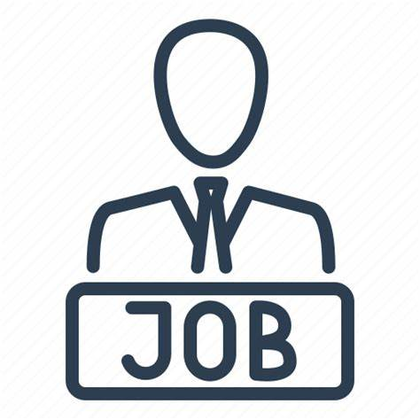
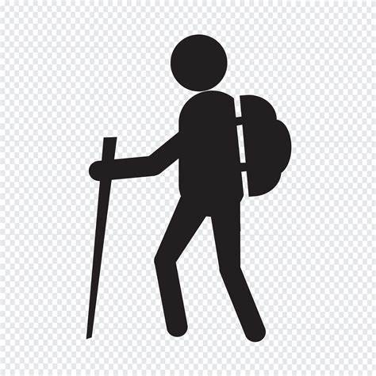
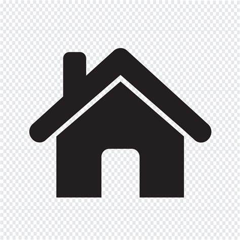
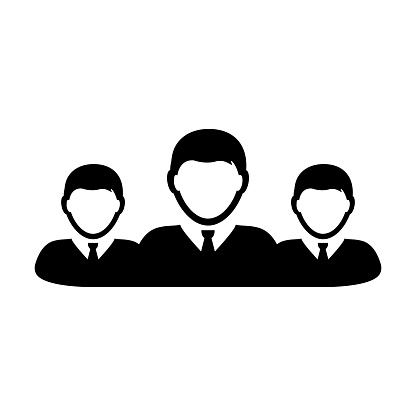

Pass all my courses
One of my short goals is to pass all of my first-year courses with a good mark so I can have honor on my diploma. Also to learn as much as I can from my faculty so it can help me when I do my work placement.
Work opportunity
My second short-term goal is to find a co-op opportunity to gain relevant employment skills and realistic expectations of the work force before graduation.

Communication skill
As English is not my first language, I want to continue developing my communication skills. I want to communicate effectively with people and build my own confidence so I can feel comfortable handling any situation.
Daily walk
My fourth short-term goal is to get out for a walk at least once each day. Since I sit on a chair most of the time doing my assignments and work, it is important that I take care of myself.
Buy a house plan
My last short term goal is to increase my monthly saving once I start working so I can buy a house in the next few years.
Learn leadership experience
One of my long-term goals is to gain leadership experience. One day I hope to become a team leader or manager, but I know I will only achieve that goal if I work hard, gain experience and impress my employer.
Gain my diploma
Gaining a diploma is something I have always wanted to achieve, and I will work hard for that. Doing that will improve my communication skills and it will increase my knowledge which I hope to use in the workplace and in everyday experience.